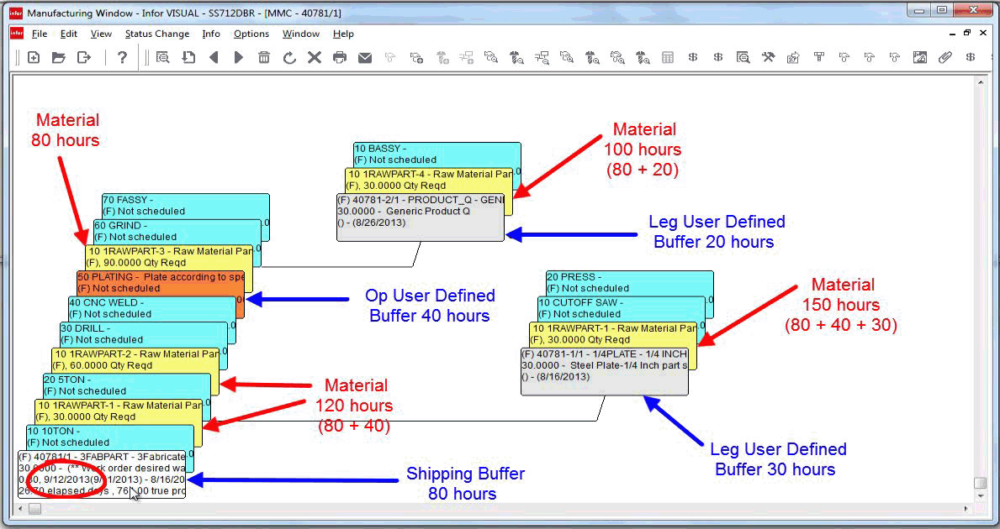

You can specify additional buffer time for resources on made-to-order parts only. You can specify this additional time on resources and legs on your engineering masters or on individual work orders. When you add a user-defined buffer to a resource or leg, the buffer time is added to the shipping buffer. This provides extra protection to the resource or leg and allows materials to be issued to the resource or leg earlier.
To specify a user-defined buffer an a non-stocked part:
Select Eng/Mfg, Manufacturing Window.
Open the engineering master or work order to which you are applying a user-defined buffer.
Specify the user defined buffer:
To specify a user-defined buffer for an operation, open the operation card. Click the Other tab, and then specify the length of the buffer in hours in the Buffer Size (Hrs) field.
To specify a user-defined buffer for a leg, open the leg header card. Click the Specifications tab, and then specify the length of the buffer in hours in the Buffer Size (Hrs) field.
If you have not previously applied a buffer to the operation or leg, you are asked if you would like to update the buffer. Click Yes.
Click Save.
You can view information about the user-defined buffers applied to your work orders in DBR Maintenance.
When you apply a user-defined buffer to an operation, the buffer time is added to the shipping buffer for materials preceding the operation where the buffer is applied. For example, if you applied a user-defined buffer of 40 hours to operation 50, the user-defined buffer is applied to material requirements for operations 10 through 40.
When you apply a user-defined buffer to a leg, the buffer time is added to the material requirements used on the leg.
Multiple user-defined buffers can apply to materials. For example, if a user-defined buffer of 40 hours was applied to operation 50, and a leg with a user defined buffer of 30 is added to operation 10, then both user-defined buffers are applied to the material requirements on the leg.
This example demonstrates how user-defined buffers are applied. These buffers are used:
Shipping buffer - 80 hours
User-defined buffer applied to operation 50 - 40 hours
User-defined buffer applied to leg on operation 10 - 30 hours
User-defined buffer applied to leg on operation 60 - 20 hours

In this example, the material requirements for operations 10 and 20 have a total buffer of 120 hours, or the shipping buffer plus the user-defined buffer on operation 50.
The material requirement for operation 60 has a total buffer of 80, which is the shipping buffer.
The leg used on operation 10 has a total buffer of 150 hours, or the shipping buffer plus the user-defined buffer on the leg plus the buffer on operation 50.
The leg used on operation 60 has a total buffer of 100, or the shipping buffer plus the user-defined buffer on the leg.